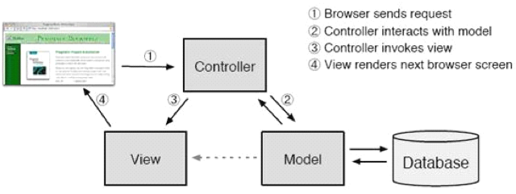

预备知识：URLconf + MTV：Django 眼中的 MVC¶
MVC 是众所周知的模式，即：将应用程序分解成三个组成部分：Model（模型），View（视图），Controller（控制器）。其中：
- M 管理应用程序的状态（通常存储到数据库中），并约束改变状态的行为（或者叫做“业务规则”）。
- C 接受外部用户的操作，根据操作访问模型获取数据，并调用“视图”显示这些数据。控制器是将“模型”和“视图”隔离，并成为二者之间的联系纽带。
- V 负责把数据格式化后呈现给用户。
在《Agile Web Development with Rails》中有这样一张图对 MVC 模式进行了很好的解释：
Django 也是一个 MVC 框架。但是在 Django 中，控制器接受用户输入的部分由框架自行处理，所以 Django 里更关注的是模型（Model）、模板(Template)和视图（Views），称为 MTV 模式：
M 代表模型（Model），即数据存取层。
该层处理与数据相关的所有事务：如何存取、如何验证有效性、包含哪些行为以及数据之间的关系等。
T 代表模板（Template），即表现层。
该层处理与表现相关的决定：如何在页面或其他类型文档中进行显示。
V 代表视图（View），即业务逻辑层。
该层包含存取模型及调取恰当模板的相关逻辑。你可以把它看作模型与模板之间的桥梁。
需要注意的是，不能简单的把 Django 视图认为是 MVC 控制器，把 Django 模板认为 MVC 视图。区别在于：
Django 视图：不处理用户输入，而仅仅决定要展现哪些数据给用户。
Django 模板：仅仅决定如何展现 Django 视图指定的数据。
或者说, Django 将 MVC 中的视图进一步分解为 Django 视图和 Django 模板两个部分，分别决定 “展现哪些数据” 和 “如何展现”，使得 Django 的模板可以根据需要随时替换，而不仅仅限制于内置的模板。
至于 MVC 控制器部分，由 Django 框架的 URLconf 来实现。URLconf 设计非常巧妙，其机制是使用正则表达式匹配 URL，然后调用合适的 Python 函数。虽然一开始有些不习惯，但是你很快就会喜欢上它，因为 URLconf 对于 URL 的规则没有任何限制，你完全可以设计成任意的 URL 风格，不管是传统的，RESTful 的，或者是另类的。